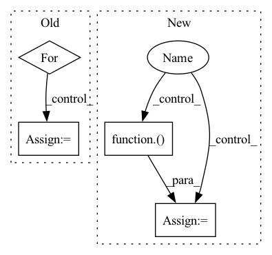

Pattern ID :30185
Before Change
// if image.dtype!=np.uint8:
// image = image.astype(np.int).astype(np.uint8)
for i in range(len(self.primitives)):
image = step(i, image)
return image.astype(np.float32)
After Change
// if image.dtype!=np.uint8:
// image = image.astype(np.int).astype(np.uint8)
for i in indices:
image = getattr(self, self.primitives[i])( image)
return image.astype(np.float32)
In pattern: SUPERPATTERN
Frequency: 4
Non-data size: 4
Instances Fragment ID: 89653272
Project Name: shaofengzeng/superpoint-pytorch
Commit Name: bc18f346dc28a4aaa565901d945471f0c264719b
Time: 2021-11-30
Author: shaofengzeng@163.com
File Name: dataset/utils/photometric_augmentation.py
M Class Name: PhotoAugmentor
N Class Name: PhotoAugmentor
M Method Name: __call__(2)
N Method Name: __call__(2)
M Parent Class:
N Parent Class:
M File Name: dataset/utils/photometric_augmentation.py
N File Name: dataset/utils/photometric_augmentation.py
M Start Line: 164
M End Line: 166
N Start Line: 153
N End Line: 161
Before Change
x_pred.append(self.true_time_series[:, 0, :].clone())
forward_tensor = self.true_time_series[:, 0, :].clone().to(reservoir.device)
hh = None
for t in range(1, self.true_time_series.shape[-2]):
forward_tensor, hh = unpack_out_hh(reservoir(forward_tensor, hh, t=t-1))
forward_tensor, _ = unpack_out_hh(output_layer(forward_tensor, None, t=t-1))
x_pred.append(forward_tensor)
// eligibility_traces = dy_dw_local(y=forward_tensor, params=self.params)
// self.eprop.eligibility_traces = eligibility_tracesAfter Change
val_pvars = []
inputs = self.raw_time_series[:, 0, :].clone().unsqueeze(1).to(self.model.device)
for _ in range(100):
val_x_pred = self.model.get_prediction_trace(inputs)
pvar = PVarianceLoss()( val_x_pred, self.raw_time_series.to(val_x_pred.device))
val_pvars.append(to_numpy(pvar).item())
print(f"Validation PVariance: {np.mean(val_pvars):.3f}")
return x_pred, self.raw_time_series
Fragment ID: 89653273
Project Name: neurotorch/neurotorch
Commit Name: da8d4065502c761ccf6e28e47dd189e3b5488140
Time: 2023-01-31
Author: 50332514+JeremieGince@users.noreply.github.com
File Name: src/neurotorch/learning_algorithms/debug_e_prop_v5.py
M Class Name: SimplifiedEpropFinal
N Class Name: SimplifiedEpropFinal
M Method Name: train(4)
N Method Name: train(4)
M Parent Class:
N Parent Class:
M File Name: src/neurotorch/learning_algorithms/debug_e_prop_v5.py
N File Name: src/neurotorch/learning_algorithms/debug_e_prop_v5.py
M Start Line: 120
M End Line: 153
N Start Line: 115
N End Line: 144
Before Change
src = input_embed(ctx, src)
zero = jnp.zeros_like(src)
src = (ctx.parameters, src, zero, src, zero)
for i in range(ctx.dims.depth):
src = reversible(ctx, pointwise_block, src)
src = reversible(ctx, bottleneck_block, src)
src = reversible(ctx, pointwise_block, src)
if i % ctx.model.qrnn_frequency == (ctx.model.qrnn_frequency // 2 - 1):
src = reversible(ctx, qrnn_block, src)
out = revnet_out(src[1:])After Change
src = input_embed(ctx, src)
zero = jnp.zeros_like(src)
src = (src, zero, src, zero)
if ctx.is_initializing :
ctx.add_depth = True
ctx.parameters = step(ctx)(src, ({}, 0))
ctx.add_depth = False
else:
src, _ = step(ctx)( src, ({}, 0))
out = revnet_out(src)
out = scale_norm_act(ctx, out, ctx.dims.features, act=False)
wgt = get_param(ctx, "out_embd", [ctx.dims.features, ctx.dims.vocab], std=1,
lr_scale=ctx.optimizer.output_scale, scale=1 / ctx.dims.heads) Fragment ID: 89653275
Project Name: homebrewnlp/homebrewnlp-jax
Commit Name: 457dca1ca35d447a12a1e2ede9ac2e19b93c20a1
Time: 2022-08-28
Author: 39779310+ClashLuke@users.noreply.github.com
File Name: src/model/main.py
M Class Name: AnonimousClass
N Class Name: AnonimousClass
M Method Name: body_ctx(2)
N Method Name: body_ctx(2)
M Parent Class:
N Parent Class:
M File Name: src/model/main.py
N File Name: src/model/main.py
M Start Line: 27
M End Line: 36
N Start Line: 55
N End Line: 64
Before Change
src = input_embed(ctx, src)
zero = jnp.zeros_like(src)
src = (ctx.parameters, src, zero, src, zero)
for i in range(ctx.dims.depth):
src = reversible(ctx, pointwise_block, src)
src = reversible(ctx, bottleneck_block, src)
src = reversible(ctx, pointwise_block, src)
if i % ctx.model.qrnn_frequency == (ctx.model.qrnn_frequency // 2 - 1):
src = reversible(ctx, qrnn_block, src)
ctx.parameters = src[0]After Change
src = input_embed(ctx, src)
zero = jnp.zeros_like(src)
src = (src, zero, src, zero)
if ctx.is_initializing :
ctx.add_depth = True
src = step(ctx)( src, ({}, 0))
ctx.add_depth = False
else:
src = lax.scan(step, src, (ctx.parameters, jnp.arange(ctx.dims.depth)), ctx.dims.depth)
out = revnet_out(src[1:]) Fragment ID: 89653267
Project Name: homebrewnlp/homebrewnlp-jax
Commit Name: 358c6c5b5778f5d4f660625fa333b6f88e440903
Time: 2022-08-25
Author: 39779310+ClashLuke@users.noreply.github.com
File Name: src/model/main.py
M Class Name: AnonimousClass
N Class Name: AnonimousClass
M Method Name: body_ctx(2)
N Method Name: body_ctx(2)
M Parent Class:
N Parent Class:
M File Name: src/model/main.py
N File Name: src/model/main.py
M Start Line: 29
M End Line: 36
N Start Line: 46
N End Line: 53